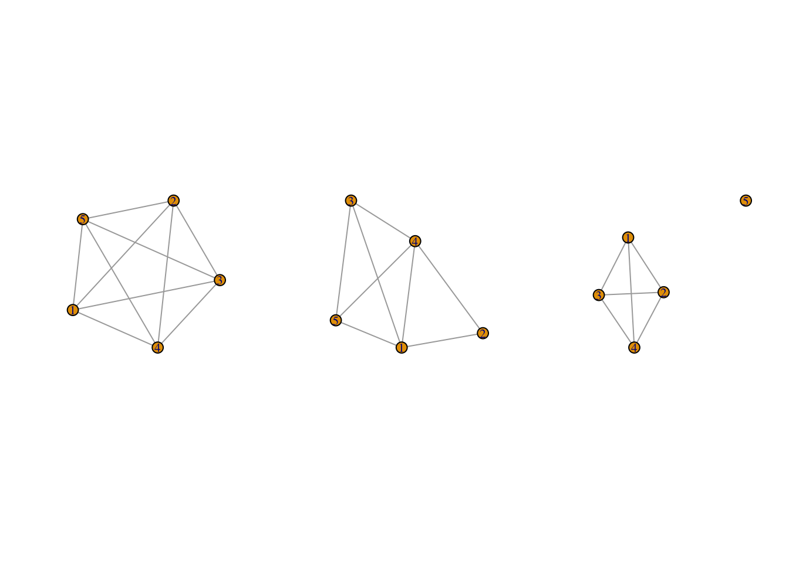
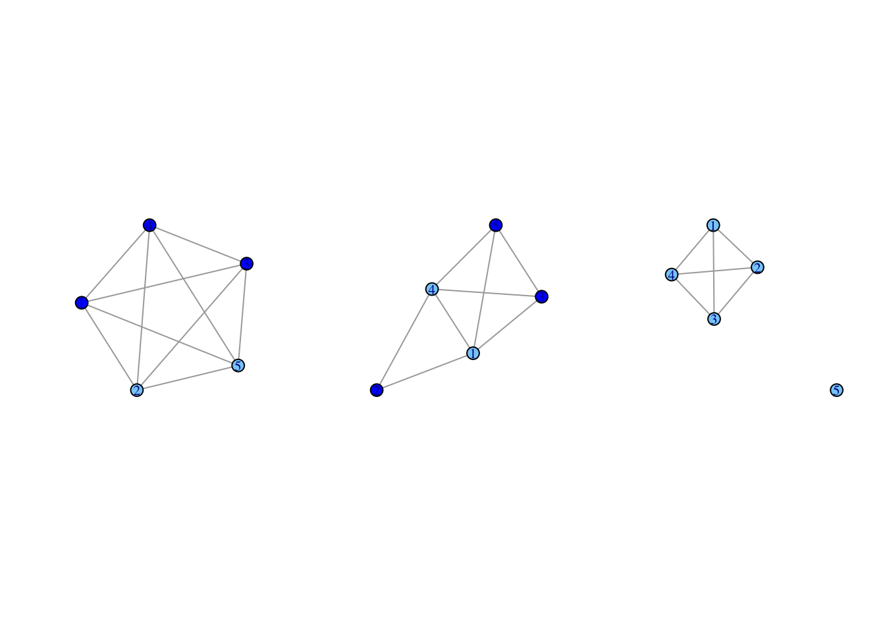

6 Ego Network Data
In this tutorial, we will go over how to analyze ego network data in R. Unlike in Chapters 3-5, this tutorial will offer a more in-depth substantive example, where we use ego network data to answer a series of research questions. We will begin by covering the basics of ego network data, utilizing the egor package (Krenz et al. 2023) to manipulate, construct and visualize ego networks (similar to the previous tutorials, but for ego network data). We will then turn to an example analysis, focusing on substantive questions related to homophily, the tendency for similar actors to interact at higher rates than dissimilar actors. We will also consider an example where the ego network properties are used to predict other outcomes of interest, like happiness.
6.1 Working with Ego Network Data
Ego network data are based on a sample of individuals and are commonly used in the social sciences. Each respondent (ego) reports on the people (alters) they are connected to, providing the local network around the focal respondent. Ego network data offer only pieces of the whole network, as there is typically no way of knowing if the alters named by one respondent are the same alters named by another. Ego network data thus require a somewhat different approach than with sociocentric network data. Most clearly, we must conceptually separate the information about the egos from information about the named alters, which is typically provided by ego. Ego network data can be structured in a number of ways but will generally have 4 kinds of information:
- first, demographic, behavioral, etc. information on the egos
- second, demographic, behavioral, etc. information on the named alters
- third, information about the relationship between ego and alter
- fourth, information about the relationships between the alters.
Our example ego network data come from the 1985 General Social Survey ego network module. The GSS is a nationally representative survey that is fielded yearly, including basic demographic information, socio-economic measures and the like. In addition to the core survey given each year, the GSS will include rotating modules, including occasional modules on social networks. Here, we will work with ego network data from the GSS that has been preprocessed into three different files: a file with the ego attributes; a file with the alter attributes; and a file with the alter-alter ties. At the end of this tutorial, we will consider an example that uses a single file as the input data. Let's go ahead and read in the three files, starting with the ego attribute data (read in from a URL).
url1 <- "https://github.com/JeffreyAlanSmith/Integrated_Network_Science/raw/master/data/gss1985_ego_dat.csv"
ego_dat <- read.csv(file = url1, stringsAsFactors = F) And here we look at the first 10 rows of the ego data frame, focusing on some of the key columns of interest.
ego_dat[1:10, c("CASEID", "AGE", "EDUC", "RACE", "SEX", "HAPPY", "NUMGIVEN")]## CASEID AGE EDUC RACE SEX HAPPY NUMGIVEN
## 1 19850001 33 16 white male 2 6
## 2 19850002 49 19 white male 2 6
## 3 19850003 23 16 white female 2 5
## 4 19850004 26 20 white female 2 5
## 5 19850005 24 17 white female 2 5
## 6 19850006 45 17 white male 2 4
## 7 19850007 44 18 white female 2 6
## 8 19850008 56 12 white female 2 5
## 9 19850009 85 7 white female 2 2
## 10 19850010 65 12 white female 2 2We see a number of variables that correspond to the attributes of ego. CASEID, for example, is the unique id for each respondent. We see demographic variables, like AGE and EDUC, as well as variables like HAPPY that correspond to important outcomes of interest. NUMGIVEN captures the number of alters named (capped at 6+). Note that respondents could say they had 6+ alters but were only allowed to report on 5. There are also cases in the data that have NAs for NUMGIVEN, which means they did not answer the network portion of the survey. Here we remove them from the data frame.
ego_dat <- ego_dat[!is.na(ego_dat$NUMGIVEN), ]Now, let's read in the alter attribute data.
url2 <- "https://github.com/JeffreyAlanSmith/Integrated_Network_Science/raw/master/data/gss1985_alter_dat.csv"
alter_dat <- read.csv(file = url2, stringsAsFactors = F)Here we look at the first ten rows and select columns of the alter attribute data.
alter_dat[1:10, c("CASEID", "ALTERID", "AGE", "EDUC", "RACE", "SEX", "KIN")] ## CASEID ALTERID AGE EDUC RACE SEX KIN
## 1 19850001 1 32 18 white male 0
## 2 19850001 2 29 16 white female 1
## 3 19850001 3 32 18 white male 0
## 4 19850001 4 35 16 white male 1
## 5 19850001 5 29 13 white female 0
## 6 19850002 1 42 12 white female 1
## 7 19850002 2 44 18 white male 0
## 8 19850002 3 45 16 white male 0
## 9 19850002 4 40 12 white female 0
## 10 19850002 5 50 18 white male 0The data look similar to the ego data frame but there are important differences. In this case, each row corresponds to a different named alter. Each alter is denoted by an alter id (ALTERID), unique to that respondent (based on CASEID). We see similar attributes as with the ego data. There is also information on the relationship between ego and each alter. For example, the KIN variable shows if ego is kin with that alter. As an example, we can see that respondent 1 (CASEID = 19850001) names 5 alters. The first alter (ALTERID = 1) is 32, has 18 years of education, and is not kin to ego. Note that the number of rows in the two data frames is not the same.
nrow(ego_dat)## [1] 1531nrow(alter_dat)## [1] 4483We can see that there are 1531 respondents in the ego data frame and 4483 alters in the alter data frame. Finally, we read in the alter-alter tie data.
url3 <- "https://github.com/JeffreyAlanSmith/Integrated_Network_Science/raw/master/data/gss1985_alteralter_dat.csv"
alteralter_dat <- read.csv(file = url3)alteralter_dat[1:10, ]## CASEID ALTER1 ALTER2 WEIGHT
## 1 19850001 1 2 2
## 2 19850001 1 3 1
## 3 19850001 1 4 1
## 4 19850001 1 5 1
## 5 19850001 2 3 2
## 6 19850001 2 4 2
## 7 19850001 2 5 2
## 8 19850001 3 4 1
## 9 19850001 3 5 1
## 10 19850001 4 5 1This data frame captures the ties between the named alters (as reported on by the respondent). We see four columns. The first column defines the relevant ego using CASEID. ALTER1 defines the first alter in the dyad and ALTER2 defines the second. These ids must correspond to the ALTERID on the alter data. Weight defines the nature of the relationship. A value of 1 means that the alters know each other while a value of 2 means they are especially close. If there is no relationship between i and j then that dyad will not show up in this data frame.
Our main substantive question is about the strength of homophily on different demographic dimensions. Homophily is a fundamental feature of social networks, as individuals tend to interact with similar others. Homophily in networks emerges because of opportunities (e.g., individuals with higher incomes may live in similar neighborhoods, belong to the same clubs, etc.), differences in resources across groups, and preferences (people select friends who are similar to themselves). By examining ego network data, we can uncover quite a bit about the social boundaries that exist in society. We can ask, for example, if race is a more important social dimension than say, gender. This would be reflected in the fact that cross-race ties are rare while cross-gender ties are comparatively common. We may also want to know how the strength of homophily varies across kinds of relationships; for example kin compared to non-kin ties. This is important when trying to understand how resources, like emotional support and advice, are shared (or not) across groups. Before we dive into examining patterns of homophily, it will be useful to do a bit of data management and network construction using the functions in the egor package. We will also do some basic visualizations.
The first challenge in analyzing ego network data is that we must transform traditional survey data into something that has the structure of a network, so that we can then utilize packages like igraph and sna. Our survey data will not look like traditional network inputs (matrices, edgelists, etc.) and each survey is likely to be different, complicating the task of putting together the ego networks. Luckily, the egor package has made the task of constructing ego networks from survey data much easier. We will utilize the basic functionality of the egor package throughout the tutorial. Let's go ahead and load the package.
library(egor)The basic idea is to first construct an egor object from the survey data. We can then use that object to form igraph and/or network objects, to plot the networks and to calculate statistics of interest. The function we will use to construct the egor object is egor(). The egor() function assumes that you are inputting the data using three separate files. The main arguments are:
- alters = alter attributes data frame
- egos = ego attributes data frame
- aaties = alter-alter tie data frame
- alter_design = list of arguments to specify nomination information from survey
- ego_design = list of arguments to specify survey design of study
- ID.vars = list of variable names corresponding to key columns:
- ego = variable name for id of ego
- alter = variable name for id of alter (in alter data)
- source = variable name for 'sender' of tie in alter-alter data
- target = variable name for 'receiver' of tie in alter-alter data
Here, we will use the three data frames read in above as the main inputs. We will also tell R that CASEID is the ego id variable and ALTERID is the id variable for alters, while ALTER1 and ALTER2 are the source/target variables in the alter-alter data frame. We also note that the maximum number of alters was set to 5. It is also possible to incorporate features of the survey, like sampling weights and strata, into the constructed egor object. For the sake of simplicity, we will not include these features here, but a researcher may want to in more formal analyses.
egonetlist <- egor(alters = alter_dat, egos = ego_dat,
aaties = alteralter_dat, alter_design = list(max = 5),
ID.vars = list(ego = "CASEID", alter ="ALTERID",
source = "ALTER1", target = "ALTER2")) egonetlist## # EGO data (active): 1,531 13
## .egoID AGE EDUC RACE SEX RELIG AGE_CATEGORICAL EDUC_CATEGORICAL NUMGIVEN HAPPY HEALTH PARTYID WTSSALL
## * <int> <int> <int> <chr> <chr> <chr> <chr> <chr> <int> <int> <int> <int> <dbl>
## 1 19850001 33 16 white male jewish 30s College 6 2 2 1 1.04
## 2 19850002 49 19 white male catholic 40s Post Graduate 6 2 1 4 1.04
## 3 19850003 23 16 white female jewish 20s College 5 2 1 1 1.04
## 4 19850004 26 20 white female jewish 20s Post Graduate 5 2 2 0 0.518
## 5 19850005 24 17 white female catholic 20s Post Graduate 5 2 2 2 0.518
## # 1,526 more rows
## # ALTER data: 4,483 12
## .altID .egoID AGE EDUC RACE SEX RELIG AGE_CATEGORICAL EDUC_CATEGORICAL TALKTO SPOUSE KIN
## * <int> <int> <int> <dbl> <chr> <chr> <chr> <chr> <chr> <int> <int> <int>
## 1 1 19850001 32 18 white male jewish 30s Post Graduate 2 2 0
## 2 2 19850001 29 16 white female protestant 20s College 1 1 1
## 3 3 19850001 32 18 white male jewish 30s Post Graduate 3 2 0
## # 4,480 more rows
## # AATIE data: 4,880 4
## .egoID .srcID .tgtID WEIGHT
## * <int> <int> <int> <int>
## 1 19850001 1 2 2
## 2 19850001 1 3 1
## 3 19850001 1 4 1
## # 4,877 more rowsegor objects are constructed as tibbles, which are data frames built using the tidyverse logic. For those versed in the tidyverse, one can take advantage of all the functions, calls, etc. that go along with those kinds of objects. It is, however, not strictly necessary to know the syntax of the tidyverse to work with egor objects. Let's take a look at the egor object.
names(egonetlist) ## [1] "ego" "alter" "aatie"We can see that the elements are made up of our three data frames. For example, here we look at the ego data, extracted from the egor object (just looking at the first five columns).
egonetlist[["ego"]][, 1:5]## # A tibble: 1,531 5
## .egoID AGE EDUC RACE SEX
## <int> <int> <int> <chr> <chr>
## 1 19850001 33 16 white male
## 2 19850002 49 19 white male
## 3 19850003 23 16 white female
## 4 19850004 26 20 white female
## 5 19850005 24 17 white female
## 6 19850006 45 17 white male
## 7 19850007 44 18 white female
## 8 19850008 56 12 white female
## 9 19850009 85 7 white female
## 10 19850010 65 12 white female
## # 1,521 more rowsNote that the id variable for ego has been renamed to .egoID (it was CASEID on the original data). Here, we look at the alter attributes (just for the first five columns).
egonetlist[["alter"]][, 1:5]## # A tibble: 4,483 5
## .altID .egoID AGE EDUC RACE
## <int> <int> <int> <dbl> <chr>
## 1 1 19850001 32 18 white
## 2 2 19850001 29 16 white
## 3 3 19850001 32 18 white
## 4 4 19850001 35 16 white
## 5 5 19850001 29 13 white
## 6 1 19850002 42 12 white
## 7 2 19850002 44 18 white
## 8 3 19850002 45 16 white
## 9 4 19850002 40 12 white
## 10 5 19850002 50 18 white
## # 4,473 more rowsWe can see that the alter id has been renamed .altID (from ALTERID on the original data). And now we look at the alter-alter ties.
egonetlist[["aatie"]]## # A tibble: 4,880 4
## .egoID .srcID .tgtID WEIGHT
## <int> <int> <int> <int>
## 1 19850001 1 2 2
## 2 19850001 1 3 1
## 3 19850001 1 4 1
## 4 19850001 1 5 1
## 5 19850001 2 3 2
## 6 19850001 2 4 2
## 7 19850001 2 5 2
## 8 19850001 3 4 1
## 9 19850001 3 5 1
## 10 19850001 4 5 1
## # 4,870 more rowsWe can see that the column names for the alter-alter ties have also been renamed from the input data. The variables are now .srcID and .tgtID (rather than ALTER1 and ALTER2, as on the original data).
Let's begin by calculating a simple summary statistic on our egor object. We will begin with density, showing the proportion of alter-alter ties that exist in each ego network, relative to the number of possible ties (note that all ego networks of size 0 or 1 will have NAs for density). The function is ego_density().
dens <- ego_density(egonetlist)head(dens)## # A tibble: 6 2
## .egoID density
## <int> <dbl>
## 1 19850001 1
## 2 19850002 0.8
## 3 19850003 0.6
## 4 19850004 0.6
## 5 19850005 1
## 6 19850006 0.667The density scores are stored in the object as density. For example, respondent 1 (19850001) has 5 alters and all 10 possible ties exist (density = 1), while respondent 2 (1950002) has 5 alters but only 8 ties exist (density = .8). To check:
alteralter_dat[alteralter_dat$CASEID == 19850001, ]## CASEID ALTER1 ALTER2 WEIGHT
## 1 19850001 1 2 2
## 2 19850001 1 3 1
## 3 19850001 1 4 1
## 4 19850001 1 5 1
## 5 19850001 2 3 2
## 6 19850001 2 4 2
## 7 19850001 2 5 2
## 8 19850001 3 4 1
## 9 19850001 3 5 1
## 10 19850001 4 5 1alteralter_dat[alteralter_dat$CASEID == 19850002, ]## CASEID ALTER1 ALTER2 WEIGHT
## 11 19850002 1 2 1
## 12 19850002 1 3 1
## 13 19850002 1 4 2
## 14 19850002 1 5 2
## 15 19850002 2 4 2
## 16 19850002 3 4 2
## 17 19850002 3 5 1
## 18 19850002 4 5 26.2 Plotting Networks
Here will go over how to plot the ego networks using packages like igraph. Plotting the ego networks will give us an initial view of the data and will help inform the analysis to come.
library(igraph)The first step in making use of the functionality of igraph is to convert the information in the egor object to igraph objects. We do this using the as_igraph() function. We would use an as_network() function if we wanted to construct networks in the network format.
igraph_nets <- as_igraph(egonetlist)Now, lets take a look at the first three ego networks.
igraph_nets[1:3] ## $`19850001`
## IGRAPH e803cb6 UN-- 5 10 --
## + attr: .egoID (g/n), name (v/c), AGE (v/n), EDUC (v/n), RACE (v/c), SEX (v/c), RELIG (v/c), AGE_CATEGORICAL (v/c), EDUC_CATEGORICAL (v/c), TALKTO (v/n), SPOUSE (v/n), KIN (v/n), WEIGHT (e/n)
## + edges from e803cb6 (vertex names):
## [1] 1--2 1--3 1--4 1--5 2--3 2--4 2--5 3--4 3--5 4--5
##
## $`19850002`
## IGRAPH e5a3b7e UN-- 5 8 --
## + attr: .egoID (g/n), name (v/c), AGE (v/n), EDUC (v/n), RACE (v/c), SEX (v/c), RELIG (v/c), AGE_CATEGORICAL (v/c), EDUC_CATEGORICAL (v/c), TALKTO (v/n), SPOUSE (v/n), KIN (v/n), WEIGHT (e/n)
## + edges from e5a3b7e (vertex names):
## [1] 1--2 1--3 1--4 1--5 2--4 3--4 3--5 4--5
##
## $`19850003`
## IGRAPH b56831d UN-- 5 6 --
## + attr: .egoID (g/n), name (v/c), AGE (v/n), EDUC (v/n), RACE (v/c), SEX (v/c), RELIG (v/c), AGE_CATEGORICAL (v/c), EDUC_CATEGORICAL (v/c), TALKTO (v/n), SPOUSE (v/n), KIN (v/n), WEIGHT (e/n)
## + edges from b56831d (vertex names):
## [1] 1--2 1--3 1--4 2--3 2--4 3--4We have a list of ego networks (in the igraph format), with each ego network in a different element in the list. We can see that the information on the alters was automatically passed to the igraph objects, as was the information on the weights for the alter-alter ties. Note that by default the igraph objects will not include ego. Ego is often (but not always) excluded from visualizations and calculations because ego is, by definition, tied to all alters. Including ego thus offers little additional structural information. We will consider measures below that incorporate both ego and alter information (see Section 6.3).
As with all igraph objects, we can extract useful information, like the attributes of the nodes. As an example, let's extract information on sex of alters from the first ego network.
vertex_attr(igraph_nets[[1]], "SEX")## [1] "male" "female" "male" "male" "female"This is the same information as:
alter_dat[alter_dat$CASEID == 19850001, "SEX"]## [1] "male" "female" "male" "male" "female"Now, let's plot a couple of example networks, focusing on the first 3 ego networks.
par(mfrow = c(1, 3))
purrr::walk(igraph_nets[1:3], plot)
It is also possible to generate the code using lapply: lapply(igraph_nets[1:3], plot). lapply() will perform a given function, here plot(), over every element of an input list, here the first three elements of igraph_nets.
Now, let's see if we can color the nodes to make the plot more informative. Let's color the nodes based on gender, so we can get a sense of the level of gender homogeneity in these ego networks. This is a somewhat more difficult task than with a single network (see visualization lab), as we need to extract and use the gender attributes over multiple networks. Here we will write a little function to perform this task and then apply it over the first three ego networks.
plotfunc_colorgender <- function(nets){
# Arguments:
# nets: ego network of interest
# extracting the attribute from the ego network:
cols <- vertex_attr(nets, "SEX")
# now we use an ifelse statement to set color,
# light sky blue if gender equals female, blue otherwise:
cols <- ifelse(cols == "female", "lightskyblue", "blue")
# plotting ego network with nodes colored based on gender:
plot(nets, vertex.color = cols)
}Now lets run plotfunc_colorgender() over the first three ego networks.
par(mfrow = c(1, 3))
purrr::walk(igraph_nets[1:3], plotfunc_colorgender)
We can see that the third ego network is homogenous in terms of gender, but the first two are quite heterogeneous. We also see different patterns of ties between the named alters. The first ego network is complete, with a tie between all alter-alter pairs. In contrast, the third ego network is less dense, with one alter (id = 5) completely disconnected from the rest of the alters.
6.3 Homophily: Ego-Alter Attributes
We now move to our substantive questions about the strength and patterning of homophily. We will focus on gender and racial homophily, comparing across kin and non-kin ties. The first part of the analysis (Section 6.3.1 and 6.3.2) will utilize the ego-alter information, looking at the level of similarity between ego and alter for each ego network.
6.3.1 Proportion of Alters Matching Ego
We will begin by calculating ego-level summary measures. Our first measure of interest, calculated for each ego, is the proportion of alters that ego matches on for the attribute of interest. For example, if ego is male, what proportion of the named alters are also male?
The egor package has a number of built-in functions, like ego_density(), that make it easy to calculate summary statistics. In many cases, however, we will want to calculate a measure that is not currently included in egor. In this case, we can write our own function and then apply it to the egor object using a comp_ply() function (part of the egor package). That is what we will do here. Let's first write a little function that will compare ego's attribute to the attributes of the alters and calculate the proportion of times they match.
prop_same_function <- function(alt.attr, ego.attr){
# Arguments:
# alt.attr: alter attributes for a given ego
# ego.attr: ego attributes
# taking ego attribute and comparing to alter
# attributes, summing up number of times they match
# ignoring missing data:
same <- sum(ego.attr == alt.attr, na.rm = T)
# calculating proportion of ego-alter pairs that match:
# just for alters with no missing data
prop_same <- same / sum(!is.na(alt.attr))
# making sure if ego is missing, then prop_same is also missing
prop_same[is.na(ego.attr)] <- NA
return(prop_same)
} Note that any ego with no alters or with missing data for the alter attributes will return an NA.
We start by looking at the gender variable for all ties, including both kin and non-kin ties. We will calculate the proportion matching on gender by using our function (prop_same_function()) within a comp_ply() function. The main arguments to comp_ply() are:
- the ego object
- alt.attr = the alter attribute of interest
- .f = the function of interest
- ego.attr = the ego attribute of interest, if required
Here the alter and ego attribute are SEX and the function of interest is prop_same_function().
pmatch_sex <- comp_ply(egonetlist, alt.attr = "SEX", .f = prop_same_function,
ego.attr = "SEX") head(pmatch_sex)## # A tibble: 6 2
## .egoID result
## <int> <dbl>
## 1 19850001 0.6
## 2 19850002 0.6
## 3 19850003 1
## 4 19850004 0.4
## 5 19850005 0.4
## 6 19850006 0.75With the comp_ply() function, the calculated values are stored as result. We can see that the first two respondents match with .6 of the alters and the third matches with all of the named alters. We can go back to the raw data to spot check that this is correct. For example, respondent 1 is male (ego_dat[ego_dat$CASEID == 19850001, "SEX"]) and has 3 male and 2 female alters (alter_dat[alter_dat$CASEID == 19850001, "SEX"]), thus matching with .6 of the alters.
Now, let's do the same thing, but only consider ties that are based on kin relations. We still want to calculate homophily for gender, but we will only consider ego-alter pairs that have a kin tie. The first step is to create a new egor object that subsets the alter data to just those cases where a kin relation exists. Here, we will use a subset() function. The main inputs are the original egor object, the condition of interest and the unit to subset on. In this case, the condition of interest is where the KIN variable (on the alter attribute data frame) is equal to 1. The unit is the alter, as we only want to keep some of the alters (those with a kin tie to ego).
egonetlist_kin <- subset(egonetlist, egonetlist[["alter"]]$KIN == 1,
unit = "alter") Now we rerun our function as before, but use the kin-based egor object.
pmatch_sex_kin <- comp_ply(egonetlist_kin, alt.attr = "SEX",
.f = prop_same_function, ego.attr = "SEX") Here we do the same thing again, but for non-kin relations (so only keeping those alters with a non-kin tie to ego).
egonetlist_nonkin <- subset(egonetlist, egonetlist[["alter"]]$KIN == 0,
unit = "alter") pmatch_sex_nonkin <- comp_ply(egonetlist_nonkin, alt.attr = "SEX",
.f = prop_same_function, ego.attr = "SEX")And now let's put those vectors together into a single data frame, just extracting the result part of the output.
sexdat <- data.frame(pmatch_sex$result, pmatch_sex_kin$result,
pmatch_sex_nonkin$result)head(sexdat)## pmatch_sex.result pmatch_sex_kin.result pmatch_sex_nonkin.result
## 19850001 0.60 0.5 0.6666667
## 19850002 0.60 0.0 0.7500000
## 19850003 1.00 1.0 1.0000000
## 19850004 0.40 NaN 0.4000000
## 19850005 0.40 0.4 NaN
## 19850006 0.75 1.0 0.6666667Each row shows the proportion of alters who have the same gender as ego (one row for each ego). The second and third columns show the results for kin ties and non-kin ties only. Now, we will quickly do the same calculations for race and then compare the results with those for gender. The only inputs that change are the alter and ego attribute name.
pmatch_race <- comp_ply(egonetlist, alt.attr = "RACE",
.f = prop_same_function, ego.attr = "RACE") #all alters
pmatch_race_kin <- comp_ply(egonetlist_kin, alt.attr = "RACE",
.f = prop_same_function, ego.attr = "RACE") #kin
pmatch_race_nonkin <- comp_ply(egonetlist_nonkin, alt.attr = "RACE",
.f = prop_same_function, ego.attr = "RACE") #nonkin
racedat <- data.frame(pmatch_race$result, pmatch_race_kin$result,
pmatch_race_nonkin$result)head(racedat)## pmatch_race.result pmatch_race_kin.result pmatch_race_nonkin.result
## 19850001 1 1 1
## 19850002 1 1 1
## 19850003 1 1 1
## 19850004 1 NaN 1
## 19850005 1 1 NaN
## 19850006 1 1 1Now, let's do a simple summary over the columns in each data frame using the apply() function. apply() allows us to do a specified function for each column or row of a matrix (it will automatically be coerced into a matrix if it is a data frame). This is the equivalent of lapply() for matrices. Here we will set MARGIN to 2 to take a summary over the columns and set FUN (the function of interest) to summary.
apply(sexdat, MARGIN = 2, FUN = summary)## pmatch_sex.result pmatch_sex_kin.result pmatch_sex_nonkin.result
## Min. 0.0000000 0.0000000 0.000000
## 1st Qu. 0.4000000 0.0000000 0.500000
## Median 0.6000000 0.5000000 1.000000
## Mean 0.5917264 0.4647869 0.738193
## 3rd Qu. 0.8000000 0.6666667 1.000000
## Max. 1.0000000 1.0000000 1.000000
## NA's 137.0000000 405.0000000 557.000000apply(racedat, MARGIN = 2, FUN = summary)## pmatch_race.result pmatch_race_kin.result pmatch_race_nonkin.result
## Min. 0.0000000 0.0000000 0.0000000
## 1st Qu. 1.0000000 1.0000000 1.0000000
## Median 1.0000000 1.0000000 1.0000000
## Mean 0.9477834 0.9690074 0.9294502
## 3rd Qu. 1.0000000 1.0000000 1.0000000
## Max. 1.0000000 1.0000000 1.0000000
## NA's 140.0000000 406.0000000 561.0000000We can see that there are clear differences by relation and demographic characteristic. Starting with gender, the mean value for proportion matching is .592. This value decreases to .465 for kin ties and increases to .738 for non-kin ties. Thus, individuals tend to have much more homogenous ego networks for gender in terms of non-kin ties. This follows as kin ties (such as marriage, parent-child, etc.) tend to cut across gender lines.
Race offers a very different story. The overall level of matching is quite high (over .9) and is actually a little higher in the kin case than in the non-kin case. This would suggest that racial/ethnic boundaries, while quite strong in this data, are a bit weaker in cases of friendship, etc. which extend beyond marital and family relations. More generally, we see that race is a much more salient dimension than gender, with many respondents matching perfectly with all members of their network along racial lines, but much less so with gender, where differences between ego and alter are more common.
6.3.2 Analyzing Homophily at the Dyadic Level: Ego-Alter Pairs
So far, we have summarized the level of homophily within each ego network. It is often of interest, however, to look at the overall rates of interaction between groups. We may be interested in knowing how likely a tie is to exist between two people who match on gender and/or race (e.g., Smith, McPherson, and Smith-Lovin (2014)). This necessitates thinking about the data in dyadic terms, where we want to summarize the rates of interaction between two different groups (male/female) looking at all ego-alter pairs in the data. For example, what proportion of ties are homogenous along gender lines?
As a first step, we will the take the egor object and create a data frame that captures all ego-alter pairs. Here we can use the as_alters_df() function. We use our egor object as input and tell the function to also include ego attributes, which we need in this case.
ego_alter_dat <- data.frame(as_alters_df(egonetlist, include.ego.vars = TRUE))We now have a data frame where each row corresponds to a different ego-alter pair. Let's take a look at the first six rows:
head(ego_alter_dat)## .altID .egoID AGE EDUC RACE SEX RELIG AGE_CATEGORICAL EDUC_CATEGORICAL TALKTO SPOUSE KIN AGE_ego EDUC_ego RACE_ego SEX_ego RELIG_ego AGE_CATEGORICAL_ego EDUC_CATEGORICAL_ego NUMGIVEN_ego HAPPY_ego HEALTH_ego PARTYID_ego WTSSALL_ego
## 1 1 19850001 32 18 white male jewish 30s Post Graduate 2 2 0 33 16 white male jewish 30s College 6 2 2 1 1.0363
## 2 2 19850001 29 16 white female protestant 20s College 1 1 1 33 16 white male jewish 30s College 6 2 2 1 1.0363
## 3 3 19850001 32 18 white male jewish 30s Post Graduate 3 2 0 33 16 white male jewish 30s College 6 2 2 1 1.0363
## 4 4 19850001 35 16 white male jewish 30s College 3 2 1 33 16 white male jewish 30s College 6 2 2 1 1.0363
## 5 5 19850001 29 13 white female catholic 20s Some College 2 2 0 33 16 white male jewish 30s College 6 2 2 1 1.0363
## 6 1 19850002 42 12 white female catholic 40s HS 1 1 1 49 19 white male catholic 40s Post Graduate 6 2 1 4 1.0363Note that the columns associated with ego have a _ego after it (RACE_ego, SEX_ego, and so on) while the variables corresponding to the alters do not (RACE, SEX). We can see that the ego values are repeated N times, for each N alter that they name. It will be useful to rename the alter variables to have a "_alter" addition, to be consistent with the ego variables. Let's go ahead and change the alter column names. First we grab the column names on the ego-alter data frame.
cnames <- colnames(ego_alter_dat)Now we identify which columns are the alter columns, running from AGE to EDUC_CATEGORICAL:
which_age_column <- which(colnames(ego_alter_dat) == "AGE")
which_educ_cat_column <- which(colnames(ego_alter_dat) == "EDUC_CATEGORICAL")
alter_columns <- which_age_column:which_educ_cat_columnHere we add _alter to the alter column names using a paste command:
cnames[alter_columns] <- paste(cnames[alter_columns], "_alter", sep = "") And finally we put the new variable names on the ego-alter data frame.
colnames(ego_alter_dat) <- cnames head(ego_alter_dat)## .altID .egoID AGE_alter EDUC_alter RACE_alter SEX_alter RELIG_alter AGE_CATEGORICAL_alter EDUC_CATEGORICAL_alter TALKTO SPOUSE KIN AGE_ego EDUC_ego RACE_ego SEX_ego RELIG_ego AGE_CATEGORICAL_ego EDUC_CATEGORICAL_ego NUMGIVEN_ego HAPPY_ego HEALTH_ego PARTYID_ego WTSSALL_ego
## 1 1 19850001 32 18 white male jewish 30s Post Graduate 2 2 0 33 16 white male jewish 30s College 6 2 2 1 1.0363
## 2 2 19850001 29 16 white female protestant 20s College 1 1 1 33 16 white male jewish 30s College 6 2 2 1 1.0363
## 3 3 19850001 32 18 white male jewish 30s Post Graduate 3 2 0 33 16 white male jewish 30s College 6 2 2 1 1.0363
## 4 4 19850001 35 16 white male jewish 30s College 3 2 1 33 16 white male jewish 30s College 6 2 2 1 1.0363
## 5 5 19850001 29 13 white female catholic 20s Some College 2 2 0 33 16 white male jewish 30s College 6 2 2 1 1.0363
## 6 1 19850002 42 12 white female catholic 40s HS 1 1 1 49 19 white male catholic 40s Post Graduate 6 2 1 4 1.0363With the ego-alter data in hand, we can begin to explore the pattern of homophily in the data. We start by creating a simple table of ego gender by alter gender. Each ego will be included in the table multiple times (once for each named alter).
sextab <- table(ego_alter_dat[, "SEX_ego"], ego_alter_dat[, "SEX_alter"])sextab##
## female male
## female 1515 970
## male 748 1245We can see from the table that out of all ego-alter pairs, 1515 are female-female, 1245 are male-male and so on. We can use this information to calculate a number of useful items. For example, we can calculate the proportion of ties that match on gender. We take the number of ego-alter pairs that match (1515 + 1245) and divide that by the total number of ego-alter pairs (1515 + 970 + 748 + 1245).
sum(diag(sextab)) / sum(sextab)## [1] 0.6163466We can see that over all ego-alter pairs, .616 are of the same gender. And now for race:
racetab <- table(ego_alter_dat[, "RACE_ego"], ego_alter_dat[, "RACE_alter"])sum(diag(racetab)) / sum(racetab) ## [1] 0.948781We can see that about .949 of ego-alter pairs match on race, much higher than for gender. Tables like these offer a useful starting point for an analysis of homophily. The tables are limited, however, as they only tell us about the existing ties in the data. There is no sense of what the rate of homophily looks like compared to baseline, or chance, expectations. For example, we may want to know if gender homophily is stronger than what we would observe if people randomly formed ties (i.e., with no consideration of gender). By comparing to random, baseline expectations, we can get a better picture of the salience of the demographic characteristic in question. There are a number of ways to compare a raw mixing table, like that in sextab, to a specified baseline expectation. For example, we can use log-linear models, case-control models, or exponential random graph models. Here we will do a very simple analysis, calculating the odds of an observed tie matching on gender (or race, etc.) compared to the odds of matching by chance. To form the chance expectations, we first pair each case in the data with each other. We then take these random pairings and calculate the odds of two people matching on gender (or race). The odds of matching in the actual ego-alter pairs is then compared to the odds of matching based on these random pairings.
Here, we will write a little function to calculate the odds ratio of interest.
oddsratio_function <- function(egoalter_tab, attribute) {
# Arguments:
# egoalter_tab: table of interest
# attribute: vector representing attribute of interest in the sample
# We first calculate the number of dyads that match and mismatch on the
# attribute based on the observed data.
# We calculate the number matching by summing up over the diagonal of the
# the table (as these are cases where ego and alter have the same value).
match <- sum(diag(egoalter_tab))
# We now calculate the number mismatching by taking the total number of
# dyads and subtracting the number that match (calculated above).
notmatch <- sum(egoalter_tab) - match
# Now we calculate our chance expectations, defined as what would happen
# if we randomly paired all respondents from the data (defined in the
# input attribute vector), and calculated how many of those
# pairs were the same (and different) on the attribute of interest.
# We first do a table on the attribute, to see how many people fall
# into each category.
freq <- table(attribute)
# We next calculate the total number of random pairings,
# assuming we pair all respondents with all respondents.
# This is simply the number of respondents times the number of
# respondents minus 1, as we assume we are not pairing
# people with themself.
total_dyads <- sum(freq) * (sum(freq) - 1)
# We now calculate the number of random pairings expected to
# match by chance.
# Formally, we take the number in each category (e.g., number of men) and
# multiply that number by itself (minus 1 as we again
# assume people are not paired with themself), showing
# how many pairs would be the same if we paired all respondents with all
# respondents. Remember that R will multiply things element-wise,
# so the following bit of code will take the first value in freq
# and multiply it by the first element in freq-1. We sum up the values
# to get the total number of dyads that are expected to match.
match_chance <- sum(freq * (freq - 1))
# We now calculate the number of dyads not matching by chance as the
# difference between the total number of dyads and
# those matching by chance.
notmatch_chance <- total_dyads - match_chance
# And finally we can calculate the odds ratio of
# observed odds of matching to odds of matching by chance
or <- (match * notmatch_chance) / (notmatch * match_chance)
return(or)
} Now, let's use our little function to calculate the odds of a tie matching on gender and race, relative to chance. The two inputs are the table of ego-alter characteristics (sextab or racetab) and the input vector of attributes, showing the distribution of gender or race in the sample. Here, our baseline expectations will be based on randomly pairing all cases in the original sample. We thus set the attribute argument to the sex or race values from the ego data frame.
oddsratio_function(egoalter_tab = sextab, attribute = ego_dat[, "SEX"])## [1] 1.575119oddsratio_function(egoalter_tab = racetab, attribute = ego_dat[, "RACE"])## [1] 7.379298The results show that the odds of a tie matching on gender is 1.575 times higher than what we expect by chance. The odds ratio is much higher for race (7.379), suggesting that even net of chance expectations, race is the more salient dimension. More generally, we see that individuals are not forming ties at random in regard to race or gender (as the observed rate of matching is well above what we expect by chance).
Let's also calculate the odds ratios for kin and non-kin ties, seeing how the odds of matching differ by relation. The main difference from above is that we need to subset the ego-alter data to just include kin (or non-kin) ego-alter pairs. The rest is analogous to the code from above. For these analyses we will use all cases to form the chance expectations, but we could do analogous calculations just looking at those with kin (or non-kin) ties.
#odds of matching for kin ties, gender
kin_sextab <- table(ego_alter_dat[ego_alter_dat$KIN == 1, "SEX_ego"],
ego_alter_dat[ego_alter_dat$KIN == 1, "SEX_alter"])
oddsratio_function(egoalter_tab = kin_sextab, attribute = ego_dat[, "SEX"]) ## [1] 0.9580393#odds of matching for kin ties, race
kin_racetab <- table(ego_alter_dat[ego_alter_dat$KIN == 1, "RACE_ego"],
ego_alter_dat[ego_alter_dat$KIN == 1, "RACE_alter"])
oddsratio_function(egoalter_tab = kin_racetab, attribute = ego_dat[, "RACE"]) ## [1] 14.12947#odds of matching for non-kin ties, gender
nonkin_sextab <- table(ego_alter_dat[ego_alter_dat$KIN == 0, "SEX_ego"],
ego_alter_dat[ego_alter_dat$KIN == 0, "SEX_alter"])
oddsratio_function(egoalter_tab = nonkin_sextab, attribute = ego_dat[, "SEX"]) ## [1] 2.937705#odds of matching for non-kin ties, race
nonkin_racetab <- table(ego_alter_dat[ego_alter_dat$KIN == 0, "RACE_ego"],
ego_alter_dat[ ego_alter_dat$KIN == 0, "RACE_alter"])
oddsratio_function(egoalter_tab = nonkin_racetab, attribute = ego_dat[, "RACE"])## [1] 4.758637As before, we see that the odds of matching on race are much higher than matching on gender for kin ties, while the differences are much less pronounced for non-kin ties.
We have thus far employed very simple models to construct the baseline expectations. More complex models are possible, however. For example, we could construct our baseline expectations to take into account degree differences between groups; i.e., if men have larger ego networks, they would be represented more heavily when forming the random pairs of respondents (and perhaps that would increase the rate of matching expected by chance). Or, we may want to control for isolation status when constructing our baseline expectations. We would still ask what happens if people randomly formed ties, but now we adjust for the fact that some people do not form any ties at all. Here, we recalculate the odds ratio for gender matching, but only consider non-isolates when forming the baseline expectations.
oddsratio_function(egoalter_tab = sextab,
attribute = ego_dat$SEX[ego_dat$NUMGIVEN > 0]) ## [1] 1.5715366.4 Homophily: Alter Attributes
So far we have looked exclusively at the ego-alter data, seeing if ego is similar to the named alters on gender and race. It is also possible to focus exclusively on the alters. Here, we ignore the ego attribute and simply summarize the alter attributes within each ego network. Such measures are often used as predictors of other outcomes, like political attitudes and mental health (see below for an example). For example, we may want to know how diverse the ego network is, or how similar/different the alters are to each other. Is ego surrounded by people who are all the same? One summary measure is Shannon entropy, equal to: -1 * (sum(pi * log(pi)) where pi is the proportion of alters in category i. This is a measure of diversity, with larger values meaning the ego network is more diverse.
The function to calculate diversity is alts_diversity_entropy(). The main inputs are the egor object, the alter attribute of interest (set using the alt.attr argument) and then a base value when calculating the log (here set to exp(1) using the base argument). We start with diversity for gender.
sex_diversity <- alts_diversity_entropy(egonetlist, alt.attr = "SEX",
base = exp(1))head(sex_diversity) ## # A tibble: 6 2
## .egoID entropy
## <int> <dbl>
## 1 19850001 0.673
## 2 19850002 0.673
## 3 19850003 0
## 4 19850004 0.673
## 5 19850005 0.673
## 6 19850006 0.562The calculated statistic is stored as entropy. We can see that the first two respondents have high diversity (as the ego networks are nearly half male and half female) while the third respondent has a value of 0 (as all alters are female). And now we do the same thing for race.
race_diversity <- alts_diversity_entropy(egonetlist, alt.attr = "RACE",
base = exp(1))It is important to note that the theoretical maximum is higher in the race case as the number of categories is higher. Also note that the function will yield a 0 for cases where there are no alters or 1 alter, which may not be desirable. To put in NAs for our isolates and those with 1 alter:
sex_diversity[ego_dat$NUMGIVEN <= 1, "entropy"] <- NA
race_diversity[ego_dat$NUMGIVEN <= 1, "entropy"] <- NAAnd now we can go ahead and look at the summary statistics for diversity.
summary(sex_diversity[, "entropy"])## entropy
## Min. :0.0000
## 1st Qu.:0.5004
## Median :0.6365
## Mean :0.4898
## 3rd Qu.:0.6730
## Max. :0.6931
## NA's :364summary(race_diversity[, "entropy"])## entropy
## Min. :0.0000
## 1st Qu.:0.0000
## Median :0.0000
## Mean :0.0507
## 3rd Qu.:0.0000
## Max. :1.3322
## NA's :364We can see that the diversity measures are much lower for race than sex, suggesting that the alters tend to be more homogenous in terms of race than sex (in keeping with our findings above).
We can do similar summary measures for continuous variables, like education. For example, we may want to know what the mean (or standard deviation) of education is for the alters in each ego network. We will use a comp_ply() function again. The key inputs are the egor object, the alter attribute (set using the alt.attr argument) and then the function of interest, in this case the mean function (set using the .f argument).
mean_altereduc <- comp_ply(egonetlist, alt.attr = "EDUC", .f = mean,
na.rm = TRUE) summary(mean_altereduc[, "result"])## result
## Min. : 3.50
## 1st Qu.:12.00
## Median :12.50
## Mean :12.89
## 3rd Qu.:14.33
## Max. :18.00
## NA's :1536.5 Ego Networks as Predictors
In the section above we examined the properties of the ego networks, focusing mostly on racial and gender homophily. There are a number of other properties we could explore in more detail, like density or network size. For example, we might want to predict network size as a function of race, gender or other demographic characteristics.
We can also use properties of the ego networks as predictors of other outcomes of interest. For example, let's try and predict the variable HAPPY using the features of the ego networks. Are individuals with larger ego networks happier? Does the composition of the ego network matter?
Happy is coded as a 1 (very happy), 2 (pretty happy), 3 (not too happy). Let's add a label to the variable and reorder it to run from not happy to happy.
ego_dat$HAPPY_FACTOR <- factor(ego_dat$HAPPY, levels = c(3, 2, 1),
labels = c("not too happy", "pretty happy",
"very happy"))Let's also turn our race and sex variables into factors. We set white as the first category in our race variable.
ego_dat$RACE_FACTOR <- factor(ego_dat$RACE, levels = c("white", "asian",
"black", "hispanic",
"other"))
ego_dat$SEX_FACTOR <- factor(ego_dat$SEX)Lets also put three of our calculated network measures, density, racial diversity and mean alter education, onto the ego data frame.
ego_dat$DENSITY <- dens[["density"]] # getting values out of tibble format
ego_dat$RACE_DIVERSITY <- race_diversity[["entropy"]]
ego_dat$MEAN_ALTEREDUC <- mean_altereduc[["result"]] HAPPY is an ordinal variable. With ordinal outcome variables, it is best to utilize ordered logistic regression (or a similar model). We will need the polr() function in the MASS package to run these models.
library(MASS) To simplify things, let's create a data frame that has no missing data on any of the variables we want to include in the full model. The outcome of interest is HAPPY_FACTOR and the main predictors are ego network size (NUMGIVEN), density (DENSITY) the mean education of the alter (MEAN_ALTEREDUC) and racial diversity of the alters (RACE_DIVERSITY). We also include a number of demographic controls.
ego_dat_nomiss <- na.omit(ego_dat[, c("HAPPY_FACTOR", "NUMGIVEN", "DENSITY",
"MEAN_ALTEREDUC", "RACE_DIVERSITY",
"EDUC", "AGE", "RACE_FACTOR",
"SEX_FACTOR")])Now, we are in a position to run our ordered logistic regression predicting happiness. For our first model we will predict happiness as a function of our two structural network features, ego network size and density.
summary(happy_mod1 <- polr(HAPPY_FACTOR ~ NUMGIVEN + DENSITY,
data = ego_dat_nomiss)) ##
## Re-fitting to get Hessian## Call:
## polr(formula = HAPPY_FACTOR ~ NUMGIVEN + DENSITY, data = ego_dat_nomiss)
##
## Coefficients:
## Value Std. Error t value
## NUMGIVEN 0.08905 0.04789 1.859
## DENSITY 0.49492 0.20547 2.409
##
## Intercepts:
## Value Std. Error t value
## not too happy|pretty happy -1.4143 0.2722 -5.1965
## pretty happy|very happy 1.6190 0.2724 5.9435
##
## Residual Deviance: 2080.162
## AIC: 2088.162The results suggest that respondents with dense networks report higher levels of happiness, while ego network size (NUMGIVEN) is not a significant predictor of happiness, controlling for density. The initial results would suggest that it is less about the number of people in your ego network that matters for happiness, and more about whether they know each other. And now let's add some controls for demographics.
summary(happy_mod2 <- polr(HAPPY_FACTOR ~ NUMGIVEN + DENSITY + EDUC + AGE +
RACE_FACTOR + SEX_FACTOR,
data = ego_dat_nomiss))##
## Re-fitting to get Hessian## Call:
## polr(formula = HAPPY_FACTOR ~ NUMGIVEN + DENSITY + EDUC + AGE +
## RACE_FACTOR + SEX_FACTOR, data = ego_dat_nomiss)
##
## Coefficients:
## Value Std. Error t value
## NUMGIVEN 0.03867 0.04982 0.7761
## DENSITY 0.53994 0.20849 2.5897
## EDUC 0.06446 0.02180 2.9563
## AGE 0.00244 0.00363 0.6722
## RACE_FACTORasian 1.07909 0.75375 1.4316
## RACE_FACTORblack -0.92220 0.24011 -3.8407
## RACE_FACTORhispanic -0.40628 0.28247 -1.4383
## RACE_FACTORother -0.33871 0.67691 -0.5004
## SEX_FACTORmale 0.09657 0.12030 0.8027
##
## Intercepts:
## Value Std. Error t value
## not too happy|pretty happy -0.7120 0.4383 -1.6242
## pretty happy|very happy 2.3946 0.4438 5.3962
##
## Residual Deviance: 2047.593
## AIC: 2069.593Controlling for education, race, age and sex, we see that density is still a significant predictor of happiness. Individuals with alters who are interconnected consistently report higher levels of happiness, showing the potential benefits of being part of an integrated social group. We also see that individuals with higher education tend to report higher levels of happiness, while those individuals identifying as black report lower levels of happiness. Finally, we will add our two compositional measures: mean alter education and racial diversity.
summary(happy_mod3 <- polr(HAPPY_FACTOR ~ NUMGIVEN + DENSITY + EDUC + AGE +
RACE_FACTOR + SEX_FACTOR + MEAN_ALTEREDUC +
RACE_DIVERSITY, data = ego_dat_nomiss))##
## Re-fitting to get Hessian## Call:
## polr(formula = HAPPY_FACTOR ~ NUMGIVEN + DENSITY + EDUC + AGE +
## RACE_FACTOR + SEX_FACTOR + MEAN_ALTEREDUC + RACE_DIVERSITY,
## data = ego_dat_nomiss)
##
## Coefficients:
## Value Std. Error t value
## NUMGIVEN 3.654e-02 0.050117 0.72909
## DENSITY 6.040e-01 0.211527 2.85561
## EDUC 1.198e-02 0.026014 0.46034
## AGE -9.306e-05 0.003691 -0.02521
## RACE_FACTORasian 1.014e+00 0.765069 1.32518
## RACE_FACTORblack -8.308e-01 0.242392 -3.42758
## RACE_FACTORhispanic -1.823e-01 0.287255 -0.63450
## RACE_FACTORother -1.382e-02 0.680679 -0.02030
## SEX_FACTORmale 7.795e-02 0.120653 0.64609
## MEAN_ALTEREDUC 1.294e-01 0.035478 3.64683
## RACE_DIVERSITY -6.904e-01 0.361167 -1.91148
##
## Intercepts:
## Value Std. Error t value
## not too happy|pretty happy 0.1813 0.5104 0.3552
## pretty happy|very happy 3.3248 0.5211 6.3808
##
## Residual Deviance: 2030.842
## AIC: 2056.842Our full model offers interesting insights when compared to model 2. We see that individuals surrounded by highly educated alters tend to report higher levels of happiness. This may be the case as individuals with higher education (especially in 1985) are less stressed, have better financial resources, etc. Being surrounded by such people may make it easier to feel happy oneself. We also see that the EDUC variable, capturing the respondent's education, is no longer a significant predictor. This suggests that happiness is less about having higher levels of education, and more about the social context in which one lives (see, for example: McPherson and Smith (2019)). Being surrounded by folks who are less stressed (for example) may lead to happiness, even if the respondent does not themself have high levels of education. We also see that the coefficient on racial diversity is negative, but it is not significant (at traditional levels). Thus, while there may be some tendency for respondents with more racially diverse networks to be less happy, our uncertainty in the estimate is too great to be sure the effect is real.
6.6 Working with One Input File
We end the tutorial by demonstrating how to construct egor objects using a single file as the main input. This is directly analogous to part 1 above, but here we use data stored as a single file, rather than 3 separate files. A single file is a convenient and common way of storing ego network data. A single file does, however, make the task of constructing the egor object somewhat more difficult than with 3 separate files. Here, we will demonstrate how to take the ego network data, stored as one file, and turn into the three data frames we read in above, one for the ego information, one for the alter information, and one for the alter-alter tie information (see the onefile_to_egor() function for an alternative approach). Once we have the three data frames, we can use them to construct the egor object, as above.
Let's go ahead and read in the data. The data are the same as above, just stored as one file.
url4 <- "https://github.com/JeffreyAlanSmith/Integrated_Network_Science/raw/master/data/gss1985_egonetworks.csv"
egonets <- read.csv(file = url4)head(egonets)## CASEID AGE EDUC RACE SEX RELIG AGE_CATEGORICAL EDUC_CATEGORICAL NUMGIVEN HAPPY HEALTH PARTYID WTSSALL AGE1 AGE2 AGE3 AGE4 AGE5 EDUC1 EDUC2 EDUC3 EDUC4 EDUC5 RACE1 RACE2 RACE3 RACE4 RACE5 SEX1 SEX2 SEX3 SEX4 SEX5 RELIG1 RELIG2 RELIG3 RELIG4 RELIG5 AGE_CATEGORICAL1 AGE_CATEGORICAL2 AGE_CATEGORICAL3 AGE_CATEGORICAL4 AGE_CATEGORICAL5 EDUC_CATEGORICAL1 EDUC_CATEGORICAL2 EDUC_CATEGORICAL3 EDUC_CATEGORICAL4 EDUC_CATEGORICAL5 TALKTO1 TALKTO2 TALKTO3 TALKTO4 TALKTO5 SPOUSE1 SPOUSE2 SPOUSE3 SPOUSE4 SPOUSE5 KIN1 KIN2 KIN3 KIN4 KIN5 CLOSE12 CLOSE13 CLOSE14 CLOSE15 CLOSE23 CLOSE24 CLOSE25 CLOSE34 CLOSE35 CLOSE45
## 1 19850001 33 16 white male jewish 30s College 6 2 2 1 1.0363 32 29 32 35 29 18 16 18 16 13 white white white white white male female male male female jewish protestant jewish jewish catholic 30s 20s 30s 30s 20s Post Graduate College Post Graduate College Some College 2 1 3 3 2 2 1 2 2 2 0 1 0 1 0 2 1 1 1 2 2 2 1 1 1
## 2 19850002 49 19 white male catholic 40s Post Graduate 6 2 1 4 1.0363 42 44 45 40 50 12 18 16 12 18 white white white white white female male male female male catholic jewish jewish catholic jewish 40s 40s 40s 40s 50s HS Post Graduate College HS Post Graduate 1 2 1 1 1 1 2 2 2 2 1 0 0 0 0 1 1 2 2 0 2 0 2 1 2
## 3 19850003 23 16 white female jewish 20s College 5 2 1 1 1.0363 25 24 46 21 35 16 12 18 16 18 white white white white white female female female female female jewish jewish jewish jewish jewish 20s 20s 40s 20s 30s College HS Post Graduate College Post Graduate 2 2 2 1 2 2 2 2 2 2 0 0 1 1 0 1 1 1 NA 1 1 NA 2 NA 0
## 4 19850004 26 20 white female jewish 20s Post Graduate 5 2 2 0 0.5181 26 27 28 27 25 18 18 18 18 16 white white white white white female male male male female none protestant none none jewish 20s 20s 20s 20s 20s Post Graduate Post Graduate Post Graduate Post Graduate College 1 1 3 2 1 2 2 2 2 2 0 0 0 0 0 1 0 0 1 0 1 1 1 0 1
## 5 19850005 24 17 white female catholic 20s Post Graduate 5 2 2 2 0.5181 44 25 20 19 12 12 13 13 13 8 white white white white white female female male male male catholic catholic catholic catholic catholic 40s 20s 20s 20s 20s HS Some College Some College Some College No HS 2 2 3 3 2 2 2 2 2 2 1 1 1 1 1 2 2 2 2 2 2 2 2 2 2
## 6 19850006 45 17 white male none 40s Post Graduate 4 2 2 1 0.5181 40 35 44 35 NA 16 16 18 16 NA white white white white <NA> male male male female <NA> protestant none none protestant <NA> 40s 30s 40s 30s <NA> College College Post Graduate College <NA> 4 2 2 1 NA 2 2 2 2 NA 1 0 0 0 NA 0 1 0 NA 1 1 NA 1 NA NAEach row is a respondent, reporting on their network alters. We see a number of columns that correspond to the attributes of the respondent, from CASEID all the way through PARTYID. These columns are the same as in ego_dat. For example, NUMGIVEN reflects the number of alters named (capped at 6+). There are also alter characteristics for age, education, race, religion and sex. For example, for age, we see AGE1, AGE2, AGE3, AGE4, AGE5, corresponding to the age of alter 1, 2, 3, etc. There is also information on the relationship between ego and each alter. For example, the KIN variables (KIN1, KIN2...) show if ego is family with alter 1, 2, and so on. This is analogous to the information in alter_dat, although organized column-wise rather than row-wise. Finally, CLOSE12, CLOSE13... captures the kind of relationship between alter 1-2, 1-3, etc. This corresponds to the information in alteralter_dat. Note that a value of 0 in the CLOSE variables means no relationship exists (1 = know each other and 2 = especially close).
Before we construct our three data frames from the ego network data, it will be useful to define a column that corresponds to the size of the ego networks. Right now, the NUMGIVEN column shows a 6 if they have 6+ ties. But as they only report on 5 alters, we will define their actual network size as 5 if they report having 6+ alters. We will use the ifelse() function :
egonets$netsize <- ifelse(egonets$NUMGIVEN == 6, 5, egonets$NUMGIVEN) As before, we will take out any cases where they have NA for NUMGIVEN.
egonets <- egonets[!is.na(egonets$NUMGIVEN), ]We are now in a position to create our three data frames. We will begin with the ego data. Let's go ahead and grab the ego attribute information from egonets, our one file ego network data frame. This is a straightforward task and just requires subsetting the data to keep the columns of interest, corresponding to ego; in this case the first 13 columns in the data.
ego_dat_fromonefile <- egonets[, 1:13]This data is the same as ego_dat. Now we need to get the alter attribute information. The task is harder here, as we need to take data defined by ego, where each ego is a different row, and turn it into a data frame where the rows correspond to each named alter. This amounts to stacking the columns, moving from a 'wide' format to a 'long' format. We will write a little function to accomplish this task. We could also imagine employing functions like reshape() (in the reshape package) to do the same thing (see Chapter 3, Part 1).
create_alter_data <- function(egonets, netsize, var_names, egoID){
# Arguments:
# egonets: ego network data frame
# netsize: vector of ego network size
# var_names: names of variables to put on alter data frame (assumed to be
# var.name1, var.name2, for each alter)
# egoID: name of id of ego on ego network data frame
# creating empty list to hold output for each variable:
overall_list <- list()
# taking out the isolates as they have no alters:
egonets_noisolates <- egonets[netsize > 0, ]
# redefining network size after taking out isolates:
netsize_updated <- netsize[netsize > 0]
# running over each variable name:
for (p in 1:length(var_names)){
var_list <- list()
alter_list <- list()
# running over each ego:
for (x in 1:nrow(egonets_noisolates)){
# getting alter id number:
alter_nums <- rep(1:netsize_updated[x], times = 1)
# Now we grab the alter columns for that ego and put those
# values in a larger list so we can stack them later on
# into one big vector (one for each variable of interest)
alt_cols <- paste(rep(var_names[p], each = netsize_updated[x]),
alter_nums, sep = "")
var_list[[x]] <- egonets_noisolates[x, alt_cols]
alter_list[[x]] <- alter_nums
}
# stacking all alter values into one long column
var <- unlist(var_list)
overall_list[[p]] <- var
}
# putting all new variables together:
dat <- data.frame(do.call(data.frame, overall_list))
# putting useful column names on data frame
colnames(dat) <- var_names
# adding egoID and alterID to data frame:
dat <- cbind(rep(egonets_noisolates[, egoID], netsize_updated),
unlist(alter_list), dat)
colnames(dat)[1:2] <- c(egoID, "alterID")
return(dat)
}Now we will use our function to get the alter data frame from our 'one file format' ego network data. The main arguments are egonets (the input data frame), netsize (a vector showing the ego network size) and var_names, the column names of interest. Here we restrict the column names to AGE, EDUC, RACE, SEX and RELIG. We also set the name for the egoID as CASEID.
alter_dat_fromonefile <- create_alter_data(egonets = egonets,
netsize = egonets$netsize,
var_names = c("AGE", "EDUC", "RACE",
"SEX", "RELIG"),
egoID = "CASEID")head(alter_dat_fromonefile)## CASEID alterID AGE EDUC RACE SEX RELIG
## 1 19850001 1 32 18 white male jewish
## 2 19850001 2 29 16 white female protestant
## 3 19850001 3 32 18 white male jewish
## 4 19850001 4 35 16 white male jewish
## 5 19850001 5 29 13 white female catholic
## 6 19850002 1 42 12 white female catholicWe can see that the result of this function is a data frame with alters on the rows and the attributes of interest on the columns. We also have the id of the ego for each alter. This data frame is the same as alter_dat.
As a final step, we need to create our alter-alter tie information data frame. Again, we will write a little function to accomplish this.
create_alteralter_data <- function(egonets, netsize, aa_tie_data,
egoID, max_alter){
# Arguments:
# egonets: ego network data frame
# netsize: vector of ego network size
# aa_tie_data : data for each ego showing ties between alters;
# assumed to be ordered by 1-2; 1-3; 1-4; 1-5, etc. on the columns
# egoID: name of id of ego on ego network data frame
# max_alter: maximum of number of alter of which alter-alter tie
# data was reported on
overall_list <- list()
# taking out the isolates and those
# with only one alter as they have no alter-alter ties
egonets_noisolates <- egonets[netsize > 1, ]
# also taking out the
# isolates and those with only one alter
# for the alter-alter tie input data
alteralter_tie_data <- aa_tie_data[netsize > 1, ]
# redefining network size after taking out isolates:
netsize_updated <- netsize[netsize > 1]
# defining possible alter-alter ties
alter_ids <- t(combn(max_alter, 2))
# running over each ego:
for (x in 1:nrow(egonets_noisolates)){
# First we create a data frame based on the ego ids, the possible
# alter-alter ties and the weights for each alter-alter tie,
# based on the input data for that ego
alter_dat_row <- data.frame(egoID = egonets_noisolates[x, egoID],
alter_ids,
weight = unlist(alteralter_tie_data[x, ]))
# Here we reduce some of the rows (corresponding to alter-alter ties)
# if ego had less than the max number of alters or if some
# of the alter-alter ties are not present (assumed if value
# is equal to 0 or NA)
alter_dat_row <- alter_dat_row[alter_dat_row[, 2] <= netsize_updated[x] &
alter_dat_row[, 3] <= netsize_updated[x] &
!is.na(alter_dat_row$weight) &
alter_dat_row$weight != 0, ]
overall_list[[x]] <- alter_dat_row
}
#putting all alter-alter ties, by ego, in one data frame:
alter_alter_dat <- do.call(rbind, overall_list)
#putting useful column names on the data frame:
colnames(alter_alter_dat) <- c(egoID, "source", "target", "weight")
rownames(alter_alter_dat) <- 1:nrow(alter_alter_dat)
return(alter_alter_dat)
}We now use our function to create the alter-alter tie data frame. We first need to define the aa_tie_data input. This amounts to grabbing the columns from egonets corresponding to the ties between each alter. In this case, this corresponds to columns 64 to 73. We also set max_alter at 5. The rest of the arguments (egonets, netsize and egoID) are the same as in the previous function.
aa_tie_data <- egonets[, 64:73]
alteralter_dat_fromonefile <- create_alteralter_data(egonets = egonets,
netsize = egonets$netsize,
aa_tie_data = aa_tie_data,
egoID = "CASEID",
max_alter = 5)head(alteralter_dat_fromonefile)## CASEID source target weight
## 1 19850001 1 2 2
## 2 19850001 1 3 1
## 3 19850001 1 4 1
## 4 19850001 1 5 1
## 5 19850001 2 3 2
## 6 19850001 2 4 2The function yields our alter-alter tie data frame, with each row corresponding to an alter-alter pair where a tie exists (nested within egos). This is the same as alteralter_dat. Now that we have our three files we can go ahead and create the egor object as before (with different column names):
egonetlist2 <- egor(alters = alter_dat_fromonefile,
egos = ego_dat_fromonefile,
aaties = alteralter_dat_fromonefile,
alter_design = list(max = 5),
ID.vars = list(ego = "CASEID", alter = "alterID",
source = "source", target = "target")) egonetlist2## # EGO data (active): 1,531 13
## .egoID AGE EDUC RACE SEX RELIG AGE_CATEGORICAL EDUC_CATEGORICAL NUMGIVEN HAPPY HEALTH PARTYID WTSSALL
## * <int> <int> <int> <chr> <chr> <chr> <chr> <chr> <int> <int> <int> <int> <dbl>
## 1 19850001 33 16 white male jewish 30s College 6 2 2 1 1.04
## 2 19850002 49 19 white male catholic 40s Post Graduate 6 2 1 4 1.04
## 3 19850003 23 16 white female jewish 20s College 5 2 1 1 1.04
## 4 19850004 26 20 white female jewish 20s Post Graduate 5 2 2 0 0.518
## 5 19850005 24 17 white female catholic 20s Post Graduate 5 2 2 2 0.518
## # 1,526 more rows
## # ALTER data: 4,483 7
## .altID .egoID AGE EDUC RACE SEX RELIG
## * <int> <int> <int> <dbl> <chr> <chr> <chr>
## 1 1 19850001 32 18 white male jewish
## 2 2 19850001 29 16 white female protestant
## 3 3 19850001 32 18 white male jewish
## # 4,480 more rows
## # AATIE data: 4,880 4
## .egoID .srcID .tgtID weight
## * <int> <int> <int> <int>
## 1 19850001 1 2 2
## 2 19850001 1 3 1
## 3 19850001 1 4 1
## # 4,877 more rowsThis tutorial has walked through one analysis of ego network data in R. The remaining tutorials will generally focus on sociocentric network data (although see Chapter 14 for an example using ego network data in the context of epidemiological simulations), but many of the questions and problems have a direct analogy to the ego network case. With this in mind, our next tutorial deals with dyadic and triadic processes.